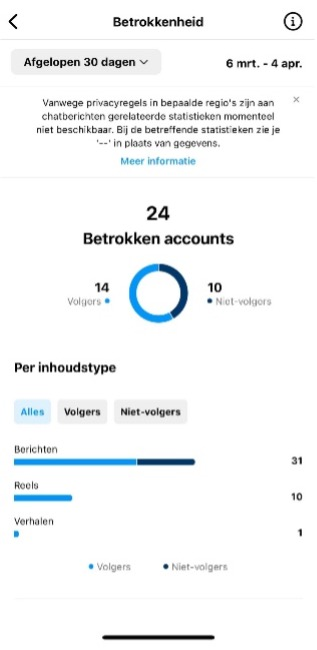

General Information
This branded website is publicly available at buas-media-interactive.github.io/my-website (please change text and hyperlink destination)
This website was created by… (only students listed below will be graded!)
- Isa de Goede (ID: 225523)
- Tamar Sopacua (ID: 222893)
- Anne Thijs (ID: 221157)
- Sasha de Quaasteniet (ID: 224311)
Content
Please clarify here the match between students and pieces of content. Make sure that you provide a link to the correct page within the website
| # | Student ID | Value | Name and link of content |
|---|---|---|---|
| 1. | 225523 | Values | Content title |
| 2. | 222893 | Vision & Mission | |
| 3. | 221157 | About us & Our Amazing Team | |
| 4. | 224311 | What we offer |
Persona
Floor Elisabeth Verhaegen

Age: 21
Gender: Female
Nationality: Dutch
Location: Tilburg, the Netherlands
Status: Situationship
Personality: Outgoing, Social, Sportive, ambitious
Weakness: Perfectionism, acting on changes in her life
Frustrations:
- Not being honest
- Balance between her life in Tilburg and Vught
- Insecure about the future, since everything seems to be planned out by everyone. She wants to travel, but also want to do a traineeship after graduating, but maybe also do a master. All these choices make her feeling lost sometimes.
motivations: Wealth for the future (a good job, nice car, beautiful house), Kindness and successful career in a corporate environment.
Brands:
- Adidas
- My Jewellery
- Apple
- Zara
Preffered channels:
- TikTok
Bio:
Floor Verhaegen is 21 years old and currently lives with 3 friends in a student house in Tilburg, where she studies communication and information sciences at the Tilburg University in Tilburg. She grew up in a family with 3 children, she is the youngest of three sisters. Her parents are still together and still live together in the parental home in Vught with their labrodoodle Bobby. Besides her studies, Floor works at Buutvrij, a creative coffee café in the heart of Tilburg. She is also still twice a week on the field hockey field in Vugt, where she is still a loyal member. She plays field hockey in a friends team. Among her friends, she is known as a sociable person, a listening ear and a creative person. She has an eye for detail, both in her studies and in her private life. She likes to be involved in styling and makes sure that every dinner party at her house is perfectly organized. She someone who regularly gifts herself a new piece of clothing, because she finds it important to look well-groomed. She gets inspiration for new outfits from Instagram and Tiktok. So besides loving her regular things, like her regular field hockey club, that she still visits her parents weekly, she is also someone who loves harmony. Harmony within the family, between her friends and also definitely in her field hockey team. She does not like injustice, not in the world and not her team. She is an everyman's friend and would like everyone to be nice to each other and not talk behind each other's backs. Despite having a rich social life both in Tilburg with her studies and her old friends in Vught, she finds it difficult to find a balance in it sometimes. To sometimes find herself in three places at once and give everyone equal attention. As much as she would like not to care what her friends think, it does keep her busy.
Production
Design Elements
The list of design elements alongside their justifications:
-
Our colour pallet
-
#F6AFCA
The choice for the light pink as primary color refers to the female part of our target group. Pinks stands for passion, tenderness, and cute. Our target group has a passion for the sport they play, and by using this pink we aim to create a passioned environment. Thereby, stands the pink for tenderness. We want to inspire people to be kind to each other, so that there will be less negativity and more positivity. And don’t forget the looks, because they are everything to our target group. With, especially the light pink, we want to create a cute logo and add the cuteness to the website so that in the end we have created a cute, tender and passionate environment for our target audience.
-
#496AFE
The choice for the bright blue as secondary color refers to the color of the hockey fields. It also stands for harmony, security, and truthfulness. With Stick Together we want to create harmony within the team, and give them a secure atmosphere. Although we are all for positivity we don’t want people to pretend, we want truthfulness. Especially since our target group is very fond of honesty. All this together is the reason to choose this color for our pallet.
-
#0D9277
The choice for the green color as secondary color refers also to the color of the hockey fields. Green stands for experienced, trusted, and healing. This perfectly connects with the message we as Stick Together want to convey. We offer experiences to learn to trust your team and celebrate victories and loses together. Green also refers to nature, since our target audience plays field hockey which is outside. Additionally, the activities we offer will be held outside in a green area.
-
#EE4C39
The choice for the bright red/ orange as a primary color refers to battle we want to overcome with Stick Together. The color stands for judge and selfish. These negative emotion are mentioned by our target group as a stumbling block in the team. We want to connect people together and make them less selfish and teach them to not immediately judge people. That is why we use this color in combination with the pink to find a perfect balance. Since the goal in the end is to have a well balanced team who work together and connect.
-
#EDE8E8
The choice for the beige as a secondary color refers to the rest and the balance. Thereby, we have looked at the brands which our target group like a lot, such as Marie Claire, Linda Meiden, and My Jewellery. All these brand use a neutral colors combined with bright colors. So to follow the trend and to appeal to our target group we chose this color pallet.
-
#F6AFCA
- Font choices
- User interface patterns (e.g. grids, carousels, menu organizations etc.)
- The structure of the navigation and content (e.g. how content units are distributed across pages)
Roboto
The Roboto font chosen for our main titles and second titles. It is a clear and pretty simple font. It fits the brands value of respect. Additionally, we chose to go for a clear font since brand that inspire our target audience also use a clear and simple font. Such as Adidas and Osaka. With this choice we want to appeal create familiarity.
Raleway
The Raleway font we used as our body font. It is an elegant and modern font which is the reason we chose it. Keeping up with the time and the newest trends is very important for our target audience. The Raleway font is both timeless and modern, which is why it fits the target audience now and still will over time. It also fits perfect with the Roboto font, to keep up the teamwork.
One of our values is fun which is why we changed up the structure in our value section. Our target audience is Gen Z, so they can manage the online world well. That is why our choice landed on separate pages per category. Organization wise we believe that this is also natural for Gen Z since multiple websites are build this way. We did however decided on a permanent navigation bar on the top, so that the website would be easy to navigate at all times.
At the home page we decided to first provide our slogan and immediately invite users to read more. We decided to do this to make the website inviting. Secondly we offer a sneak peak of our product to make the user curious, we do provide a button to our product so that they are willing to click further and that they don’t get discouraged. Lastly we provide one of our Instagram posts, which we also used for our marketing and communication campaign, together with and link to our Instagram. Instagram is the most used app among our target audience and therefore maybe even more important than the website. So with guiding them to our Instagram they can also check there what we provide.
Our second page is the Discover our world page. On this page you find all the information about the Brand and the team. We have chosen to give a polaroid style to the pictures, so that it would be like memories and thus create a pleasant environment. All the corners of the shapes are round and the shape used the most is the circle. We have chosen for this to give our website a playful effect which suits our value fun. Thereby, it looks friendly which is an important value of the target group. Finally, it fits the value sportsmanship since circles and rounded corners are organic shapes. On the Discover Our World page we also chose to show the most of our colors again for that playful and fun effect.
Our third page is the What We Offer page. On the page you find three packages all shaped with a picture first and then the text just like a polaroid. This is because with our teambuilding activities we want to make memories, and memories you capture in a photograph. The corners are round to give a friendly effect as explained before. At the bottom of every page is a footer where there is access to our Instagram account. This is to make it easy to follow us, and create a Stick Together team.
Our fourth and last page is the contact page. There are many links to this page since we are eager for people to sign up. Even if they don’t want to buy the package they can ask us questions. The button of the sign up is the same as in all buttons form the other pages. We did this to create cohesiveness. The corners of the sign up sheet are again rounded and it looks like the polaroid without the picture to make it a whole.
Lastly all colors and fonts that are used are also in our marketing campaign. We used the same colors and fonts to create an aesthetic so that we would be easy recognizable and that there would be a good link to the marketing strategy and the website.
Credits
The links and/or credits for third-party elements
Template: Agency by Start Bootstrap Agency Template
Template: buas-media-interactive/prj4-group-template by buas-media buas-media-interactive/prj4-group-template
UX patternsgetbootstrap.com/docs
Photo by Jeffrey F Lin on Unsplash Picture Jeffrey F Lin
Photo by Jeffrey F Lin on Unsplash Picture Jeffrey F Lin
Photo by Jeffrey F Lin on Unsplash Picture Jeffrey F Lin
Testing Report
- Testing goals
- Testing methods
- The test’s participants
6 test participants - 3 related to the target audience - 3 not related to the target audience
- The test’s setting
Setting - All were done at home on the laptop
- The test’s protocol
- Look up the team of Stick Together.
- Send a message to Stick Together
- Look up the story of Stick Together
- Recorded with a camera from behind (see appendix)
- The test’s participants
- Your testing results
-
- Not every button was functional
- Team wasn’t immediately found
- User friendly website
- Positive reaction to the design
- Nice to have separate pages
-
- Improvements
- Add dropdown to the Discover Our World page
- Fix all the buttons and make them work
Goal is to find out if the website is clear and the most important thing can be found. To see if the simple things like brand name are obvious and we were also really curious how the target audience related people felt about the brand.
Marketing
Context of campaign and promotional activities
For our marketing campaign, we chose to post different types of content, both as the type of content and in terms of goal for the content. Moreover, alternating in type of content, such as posts, stories and reels would also be good for getting higher in the algorithm.
We got the inspiration for the content mainly from Instagram accounts, such as @NSBML, @Linda.meiden and @haarclipvanmarieclaire. These are Instagram accounts that are popular among our target group or have the same target group as us. Something that is very typical of these channels is that they use a lot of colour, don't necessarily post a lot of reels, but very much anticipate on recognition. They make sure that followers recognize themselves in the post and also encourage to start recognizing yourself in a post. In addition to this, these channels also want to spread positivity, also something we like to do.
Examples of what we want to post:
At last we wanted to create unity between our website and our social media with our marketing plan. And that the content we’ve created was close to our target group. That we have been very attuned to that particular audience.
Learning Points
General:
If we can say one thing about this project is that we've tried, things have gone well, things have gone differently, but most of all we've learned a lot.
At the beginning of the project, we took the wrong approach, which caused a delay for us in the project and therefore we didn’t had that much time to execute our campaign as fast as we wanted to in the beginning. And as a result, we made the decision to focus completely on Instagram for marketing. Also because Instagram has a lot features as stated before in this report. We did added our Tiktok objectives and ideas to this report as part of the reflection.
The red threat hrough this whole marketing project is that’ve been too much of a perfectionist. In the report will be explained when and how, but one of the biggest thing we’ve learned is to let it go sometimes and that that is also okay. And you can even get good result if you do.
What worked and what didn't?
What worked?
What didn't work?
WHAT WENT AS EXPECTED AND WHAT DIDN’T?
WHAT WENT AS EXPECTED?
WHAT DIDN’T WENT AS EXPECTED?
All our six reels together scored in total 388 views compared to 1200 views we expected to.
For our account the normal posts did better. We got more views and engagement to our posts. If we look at the statistics 1/3 of our involved account were on our posts and not our reels.
WHAT WOULD YOU DO DIFFERENTLY?
COMMPARING TO THE COMMUNICATION AND MEDIA PLAN?
If we look back at our content planning you see that we didn’t post consistently and not according to our planning. This was all because of the points that we stated before in this report. Especially the posting times were not according to our content planning. But if we look at our objectives we didn’t achieve the objective of 250 followers, we got 30 followers in total and approximately 17 of them were active (they saw our posts). Also the reach objective of an audience reach of 5000 was a little bit ambitious. In total we reached 776 accounts. Our most reach we got on the posts: 771 and on the reels: 112 views in total and on our stories: 29 views. This makes a total of 1497 views on our account. And of course are tiktok objectives not relevant because we didn’t use Tiktok in the end. For the affective objective we wanted to encourage positive emotions such as bonding, enthusiasm and respect within the hockey community. We could anticipated more on this objective. We only made one post that really focused on positive support (post 6). Then the content would also be more in line with the content for our website. We were just more focused on which content got likes and views, instead of the message. For the response objective we wanted at least 100 interactions spread across 8 different posts. But in total we got 97 likes and 10 comments
Future Planning
Professionalism
Present and organize below all social media/online activities of the campaign. Context and material are according to the brand style, image, and vision. Images on the site are of high-quality, readable, and properly designed.

Management
Lean Canvas
Fill in at least 2 bullet points per building block and according to the rubrics.
Problem
- List your top 3 problems you solve for your target group(s).
- Describe briefly how the problems are solved now (existing alternatives).
Solution
- Outline the brand solution(s) you have for the above problem(s).
Customer segments
- List your target customers and/or users.
- Describe briefly the characteristics of your ideal customer (early adopter, brand persona).
Unique value proposition
- With a single, clear compelling message, state why your brand idea is different and worth paying attention to.
Unfair advantage
- List the aspect(s) of your brand that cannot easily be copied, also called your sustainable competitive advantage(s).
Channels
- List your main path to customers.
- How do you reach them? What channel(s) do you use.
Key metrics
- List the key numbers that tell you how your brand experience is doing.
- For example amount of users, downloads, visitors, subscriptions, sales etc. Numbers you are able to measure.
Revenue streams
- List your sources of revenue: describe the revenue model and the (different) revenue stream(s).
Cost structure
- List your main costs: define the fixed and variable costs.
- Calculate the cost per unit.
Services/products
- State what your product and/or service is and how this contributes to your unique value proposition.
- Clarify the fit between the product/service developed and the brand identity/brand image.
Validation of Assumptions
Write a reflection on the choices made in creating choosing the trademark, including an analysis of the existing alternatives.
Appendix
Please use the list below to provide links to evidence for all parts of your justication. Please double-check all links before delivering the website. Do not hesitate to refer to these numbers above.